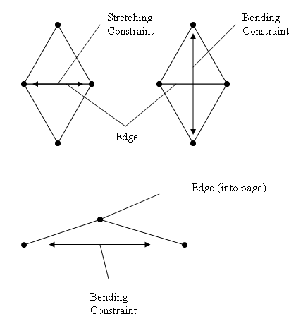

Clothes
- GClothCreation
- GClothParameters
- GClothAttachments
- GClothRendering
- GClothTearing
- GClothPressure
- GClothSleeping
- GClothMetal
- GClothOtherFeatures
- GClothFluidInteraction
Cloth
The cloth feature of the AGEIA PhysX SDK allows for simulation of items made from cloth, such as flags, clothing, etc. This is accomplished by providing a mesh that is used to define a set of particles (vertices). The topology of the mesh allows the SDK to construct constraints between the particles that mimic how cloth can bend and stretch. In addition, cloth particles can be pinned to shapes and global positions, such as attaching a flag to a pole.

There are two main types of cloth constraints:
- Stretching - applied to maintain distance between each particle that is connected by an edge in a cloth mesh. The strength of this constraint is assigned using the SDK; specifying a small stretching constraint factor allows the particles to move apart more easily and gives the impression of more stretchy cloth, such as lycra. Specifying a larger constraint factor makes the cloth stiffer, like denim.
- Bending - applied to maintain the angle along an edge in a cloth mesh, either by constraining the angle directly or by constraining the distance between the pair of particles on either side of the edge (see the diagram below). An example of a material that would use a low bending constraint for simulation is cotton, while a substance such as paper or cardboard would use a high bending constraint.

Tips
- To create stiff cloth:
- Use fewer vertices (fewer vertices makes stiffer cloth).
- Use higher iteration counts (associated performance impact).
- Use PCF_BendingOrtho mode (results in stiffer, more realistic cloth bending).
- To improve cloth performance:
- Use fewer vertices.
- Use simple bending constraints (PCF_Fending and not PCF_BendingOrtho).
- Disable cloths that are not relevant using PCF_Static.
- Disable tearing for cloths which do not need tearing.
- Avoid cloth self collision.
Caveats
- Cloth collisions only take account of one constraint per particle per timestep. This means that in some cases a cloth can slip through a concave corner during mesh or terrain collisions. A workaround is to increase the cloth's thickness or bending stiffness to prevent cloth constraints from bending around the concave edge.
- When using two way interaction, it is important to set the appropriate density of the attached objects. If an object with a very low or high density is attached to a cloth then the simulation may behave poorly.
- Collision detection is only performed with cloth vertices, so if a cloth is stretched far enough objects will be able to slip between them.
- See also:
- pCloth